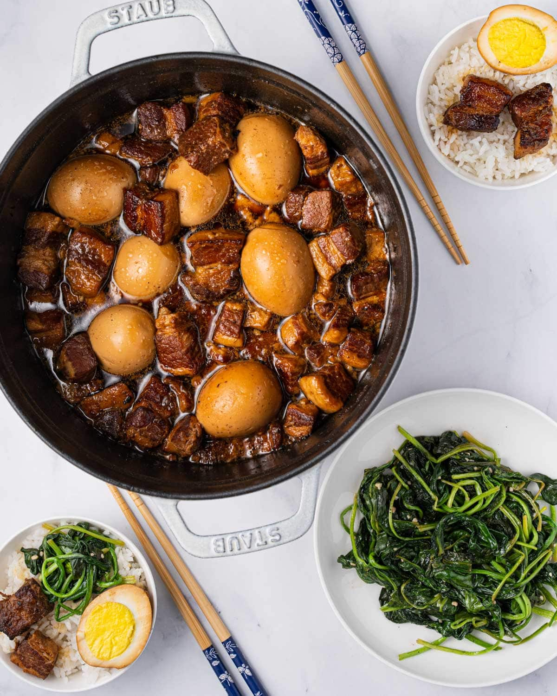

Thit Kho Trung Recipe

Ingredients
- 2 lbs of pork belly or pork shoulder, sliced into 1 inch pieces
- 6-12 eggs, hard-boiled and peeled
- ⅓ cup of fish sauce
- 1 tablespoon of sugar + ½ teaspoon of sugar
- 1 tablespoon of oil
- 1 tablespoon of minced garlic
- ¼ cup of minced shallots
- 1 can of coconut soda
- 1 teaspoon of chicken bullion powder (optional)
- 3 cups of water
Steps
- Slice pork into 1 inch or slightly smaller cubes.
- In a large pot, make the nuoc mau (caramel sauce) by heating 1 tablespoon of oil and 1 tablespoon of sugar on medium heat until it starts to caramelize. It will darken from clear to amber. Lower heat and continue to simmer until it reaches a dark caramel color. Be very careful not to burn! Any darker and the caramel sauce will be bitter — it should be discarded and made again.
- Add garlic and shallots to the pot and cook for 1 minute.
- Bring the heat up to medium high and stir in the pork to coat it in the caramel sauce.
- Add fish sauce and stir until the pork is browned on all sides.
- Add coconut soda and water and bring to a boil. Skim off any foam and scum and discard, then lower to simmer.
- Add the eggs, remaining sugar, and chicken bullion powder. Cover the pot with a lid slightly askew and simmer until the pork is tender (60-90 minutes).
Homepage